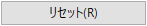
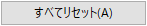
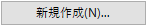
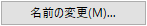
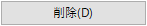

ボタングループタブに移動し、ダイアログからボタンアイコンをドラッグして、ボタンを備えた新しいツールバーを直接作成することもできます。
コードビルダでは、カスタマイズダイアログを使用して、ツールバーをカスタマイズできます。ダイアログを開くには、メニューバーのツール: カスタム化を選択します。このダイアログの2つのタブについては後述します。
このタブは、カスタム定義ツールバーの作成または削除に使用します。新規作成...ボタンをクリックすると、ツールバー名ダイアログを開き、新しいツールバーの名前を指定できます。
ツールバーボックスには、デフォルトツールバーである6つのツールバー名、デバッグ、メニューバー、移動、検索、標準、編集がリストされます。デフォルトのツールバーの名前変更、削除はできませんが、ボタンについては編集可能です。デフォルトツールバーの変更に満足できない場合は、リセットまたはすべてリセットボタンをクリックすれば、いつでもデフォルトのツールバー設定を復元できます。
ツールバー名の先頭にあるボックスのチェックを外すと、ツールバーを非表示にできます。
ツールバータブには、以下の5つのボタンがあります。
 |
選択したツールバーアイテムをリセットします。デフォルトツールバーでのみ利用できます。 |
|---|---|
 |
全てのデフォルトツールバーをリセットします。 |
 |
ツールバー名ダイアログを開き、新しいツールバーを作成します。 |
 |
ツールバー名ダイアログを開き、選択したツールバーの名前を変更します。 |
 |
選択したツールバーを削除します。ユーザ定義ツールバーでのみ利用できます。 |
|
ボタングループタブに移動し、ダイアログからボタンアイコンをドラッグして、ボタンを備えた新しいツールバーを直接作成することもできます。 |
このタブでは、すべてのボタンが5つのカテゴリに分類されています。
ツールバーにボタンを追加するには、カテゴリを選択してから、ボタンアイコンを目的のツールバーにドラッグアンドドロップします。ツールバーのボタンを削除するには、ボタンアイコンをドラッグアンドドロップしてボタングループタブのボタン群の領域にもどします。
ボタンアイコンをクックすると、説明ボックスにボタンに関する説明が表示されます。